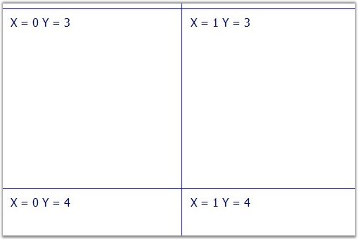
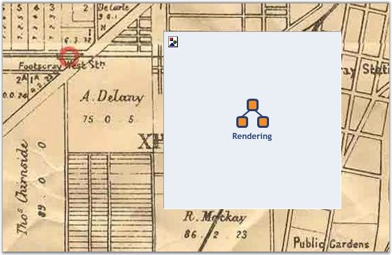

When the CachingMode is set to Virtual, the ImageGridCellUpdating event is raised, each time the control needs a tile. The OptimizedBackgroundRendering mode should be enabled for this.
You must write your own event handler implementation for the ImageGridCellUpdating event. The event handler receives an argument of type Syncfusion.Web.UI.WebControls.Diagram.ImageGridCellUpdatingEventArgs containing data related to this event. The following Syncfusion.Web.UI.WebControls.Diagram.ImageGridCellUpdatingEventArgs members provide information specific to this event.
|
Member |
Description |
|
ImageOrigin.X and ImageOrigin.Y |
Shows requested tile's left and top position. |
|
Magnification |
Current View magnification. |
|
Graphics |
System.Drawing.Graphics on which you can draw your image. |
To create this handler, click twice in the ImageGridCellUpdating event on the Visual Studio designer (section DiagramWebControl events).
|
[C#]
DiagramWebControl1_ImageGridCellUpdating(object sender, ImageGridCellUpdatingEventArgs e); |
The following code example illustrates the usage of the ImageGridCellUpdating event.
|
[C#]
protected void DiagramWebControl1_ImageGridCellUpdating (object sender, ImageGridCellUpdatingEventArgs e) { DiagramWebControl hostControl = (DiagramWebControl)sender; int nTileSize = (int)hostControl.TileSize.Value; int x = (int)(e.ImageOrigin.X / nTileSize); int y = (int)(e.ImageOrigin.Y / nTileSize);
string sText = "X = " + x.ToString() + " Y = " + y.ToString();
System.Drawing.Rectangle recTile = new System.Drawing.Rectangle (0, 0, nTileSize, nTileSize);
e.Graphics.Clear(Color.White); e.Graphics.DrawRectangle(new Pen(Color.Blue, 1), recTile);
e.Graphics.DrawString(sText, new Font("Tahoma", 12), new SolidBrush(Color.Navy), 10, 10); } |
The preceding code example draws a white image with a blue border and text inside.

Figure 40: Virtual Catching Type Sample
The main advantage of this caching type is that the application does not use much of the server's memory or hard disk. Also, you can draw anything you want. For example: you can use the virtual mode to draw small images of big maps. The following code example illustrates this.
|
[C#]
protected void DiagramWebControl1_ImageGridCellUpdating(object sender, ImageGridCellUpdatingEventArgs e) {
// get image to render int nX = (int)(e.ImageOrigin.X / 256); int nY = (int)(e.ImageOrigin.Y / 256);
int nIdx = nY * 12 + nX; if (nIdx < 0 || nIdx > 131) return; string strMapTilesPath = Server.MapPath(string.Empty) + @"\Files\Maps\Cutted\VirtualMap"; using (System.Drawing.Image img = Bitmap.FromFile(strMapTilesPath + "_" + nIdx + ".bmp")) { Matrix matrix = new Matrix(); matrix.Scale(img.HorizontalResolution / e.Graphics.DpiX, img.VerticalResolution / e.Graphics.DpiY); e.Graphics.Transform = matrix;
e.Graphics.DrawImage(img, Point.Empty); } } |

Figure 41: Sample Image
 Note:
DiagramWebControl will not change zoom automatically when you magnify the
document. You must provide correct images for custom zoom.
Note:
DiagramWebControl will not change zoom automatically when you magnify the
document. You must provide correct images for custom zoom.
See Also
Optimization, Properties and Events for Optimization, Optimized Background Rendering Mode, Optimized Content Rendering Mode, Diagram Optimization via HTML Elements, Diagram Caching Modes, Optimization Customization